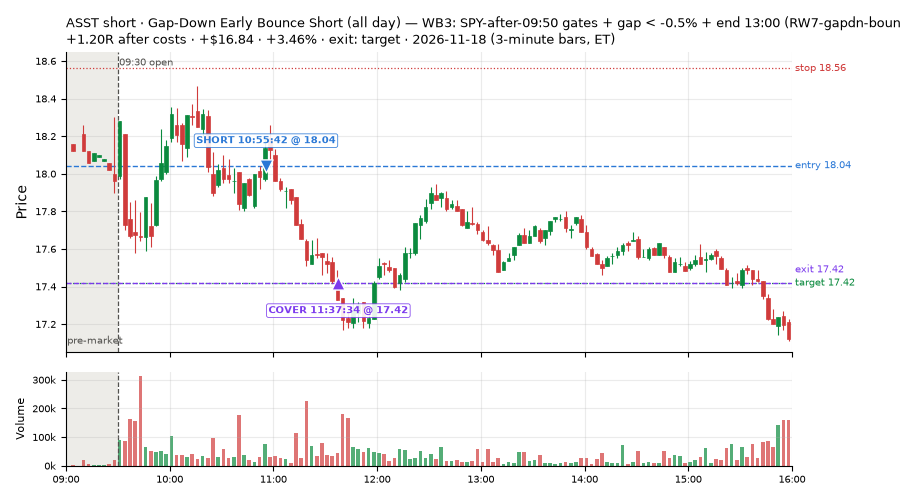
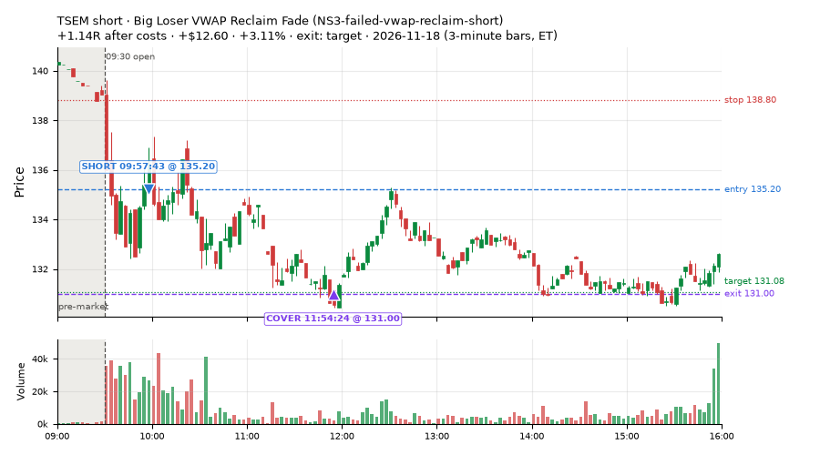
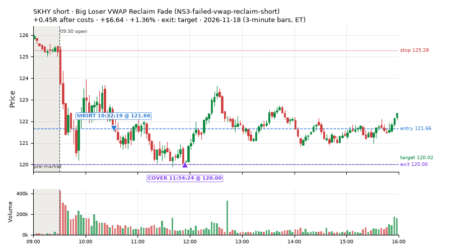
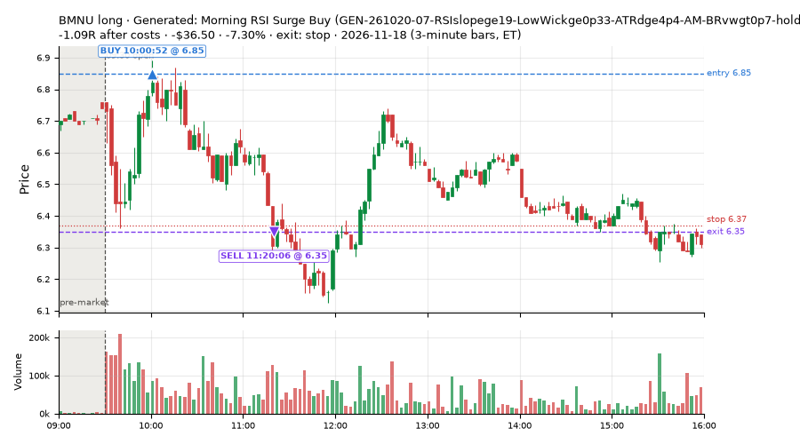
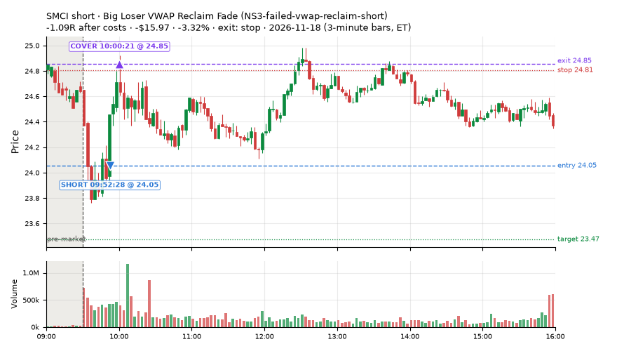
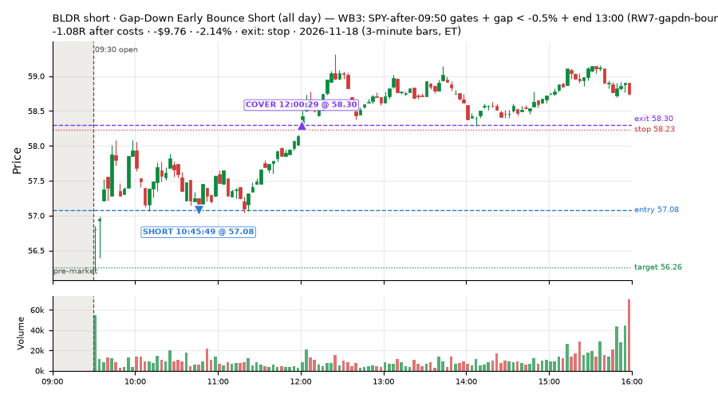
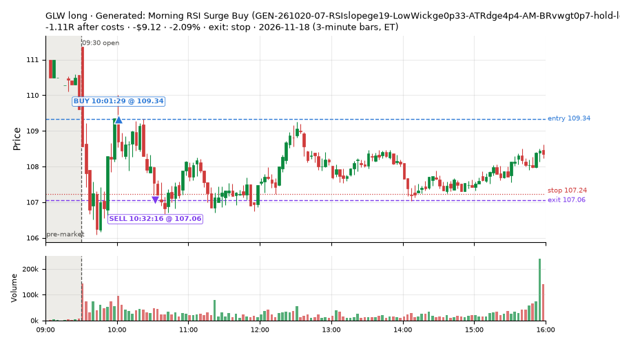
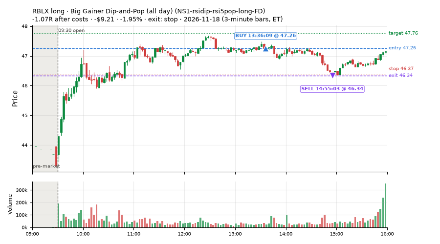

48 trades · win rate 48% · P/L $-72.24
PROBATION: no live setup has passed both locked test periods. 10 owner-directed setups added 2026-10-08 (MarcoFlow top 5 + 5 new), untested live. RW6G1 (RW6 + VWAP band guard) added 2026-10-09, probation.

| Symbol | Setup | Side | In | Out | Entry | Exit | Exit reason | % gained | P/L |
|---|---|---|---|---|---|---|---|---|---|
| ASST | Gap-Down Early Bounce Short (all day) — WB3: SPY-after-09:50 gates + gap < -0.5% + end 13:00 (RW7-gapdn-bounce-early-short-FD-WB3) | short | 10:55 | 11:37 | 18.04 | 17.42 | target | +3.46% | $16.84 |
| TSEM | Big Loser VWAP Reclaim Fade (NS3-failed-vwap-reclaim-short) | short | 09:57 | 11:54 | 135.20 | 131.00 | target | +3.11% | $12.60 |
| SKHY | Big Loser VWAP Reclaim Fade (NS3-failed-vwap-reclaim-short) | short | 10:32 | 11:54 | 121.66 | 120.00 | target | +1.36% | $6.64 |
| Symbol | Setup | Side | In | Out | Entry | Exit | Exit reason | % lost | P/L |
|---|---|---|---|---|---|---|---|---|---|
| BMNU | GEN-261020-07-RSIslopege19-LowWickge0p33-ATRdge4p4-AM-BRvwgt0p7-hold-long | long | 10:00 | 11:20 | 6.85 | 6.35 | stop | -7.30% | $-36.50 |
| SMCI | NS3-failed-vwap-reclaim-short | short | 09:52 | 10:00 | 24.05 | 24.85 | stop | -3.32% | $-15.97 |
| BLDR | RW7-gapdn-bounce-early-short-FD-WB3 | short | 10:45 | 12:00 | 57.08 | 58.30 | stop | -2.14% | $-9.76 |
| GLW | GEN-261020-07-RSIslopege19-LowWickge0p33-ATRdge4p4-AM-BRvwgt0p7-hold-long | long | 10:01 | 10:32 | 109.34 | 107.06 | stop | -2.09% | $-9.12 |
| RBLX | NS1-rsidip-rsi5pop-long-FD | long | 13:36 | 14:55 | 47.26 | 46.34 | stop | -1.95% | $-9.21 |








Signal to fill: median 1s, 90th percentile 2s (48 trades). Bars close each minute; the order follows the bar close.
Best excursion (MFE): median 0.55R; worst (MAE) median 0.71R. 27% of trades never got +0.25R in our favour; 3 reached +1R and still closed at or below 0.
| Symbol | Setup | Best R | Worst R | Closed R |
|---|---|---|---|---|
| SCCO | RW7-gapdn-bounce-early-short-FD-WB3 | +2.59 | -1.18 | -1.26 |
| BMRN | GEN-261019-08-NewHOD-Slope6ge0p03-DayRngVsPrevge1p5-AM-SPYdn-hold-short | +1.35 | -1.07 | -1.15 |
| TDC | GEN-261019-08-NewHOD-Slope6ge0p03-DayRngVsPrevge1p5-AM-SPYdn-hold-short | +1.65 | -0.67 | -0.30 |
| LNT | RW7-gapdn-bounce-early-short-FD-WB3 | +0.68 | -1.04 | -1.20 |
| PVH | GEN-261019-08-NewHOD-Slope6ge0p03-DayRngVsPrevge1p5-AM-SPYdn-hold-short | +0.43 | -1.02 | -1.21 |
| Entry time | Trades | Win | Avg R | P/L |
|---|---|---|---|---|
| 09:50-10:30 | 14 | 36% | -0.41 | $-72.24 |
| 10:30-11:30 | 15 | 40% | -0.27 | $1.40 |
| 11:30-13:00 | 7 | 86% | +0.21 | $2.02 |
| 13:00-14:00 | 5 | 0% | -0.77 | $-21.45 |
| 14:00-16:00 | 7 | 86% | +0.26 | $18.03 |
| Setup | Trades | Win | Avg R after costs | Adj R (net of SPY) | Avg R ex-market (all sessions) | P/L |
|---|---|---|---|---|---|---|
| Generated: Morning New-High Short (SPY down) (GEN-261019-08-NewHOD-Slope6ge0p03-DayRngVsPrevge1p5-AM-SPYdn-hold-short) | 3.0 | 0% | -0.89 | -0.63 | – | $-10.35 |
| Generated: Morning RSI Surge Buy (GEN-261020-07-RSIslopege19-LowWickge0p33-ATRdge4p4-AM-BRvwgt0p7-hold-long) | 3.0 | 0% | -1.10 | -0.79 | – | $-50.62 |
| Generated: Lunch New-Low Short (selling) — WB1: down >= 1.3 ATR on the day (GEN-261026-03-NewLOD-Flow3lem0p37-FromOpenATRlem0p78-LUNCH-BRopgt0p5-holdtr-short-WB1) | 2.0 | 100% | +0.34 | +0.16 | – | $4.55 |
| Generated: Open Up-Day Bounce Short (GEN-261026-05-Ret15mATRge0p042-FromPCATRge0p28-ORHdistlem0p38-OPEN-BRopgt0p5-hold-short) | 1.0 | 100% | +0.03 | -0.06 | – | $0.82 |
| Generated: Late Pullback Buy (MACD rising) (GEN-261027-01-MACDhge0p12-Ret15mATRlem0p069-LATE-BRvwgt0p5-t05s1-long) | 1.0 | 100% | +0.42 | +0.41 | – | $6.65 |
| * SPY Dip of 0.30%, Breadth Turn (SPXL, trailing) (near-miss) (LD8-spy-dip030-breadthturn-spxl-holdtr-long) | 1.0 | 0% | -0.15 | -0.07 | – | $-1.44 |
| Late-Day ETF Dip Buy — WB4: more dips (refire, looser DI, falling-hour guard) (NM-ETF-late-dip-di-long-WB4) | 3.0 | 67% | +0.08 | +0.07 | – | $4.18 |
| Big Gainer Dip-and-Pop (all day) (NS1-rsidip-rsi5pop-long-FD) | 7.0 | 29% | -0.45 | -0.31 | -0.52 (beta +0.13, n 16) | $-17.69 |
| Big Loser VWAP Reclaim Fade (NS3-failed-vwap-reclaim-short) owner-directed; holdouts once: Sep-Oct +0.119R n65, Apr-Jun -0.136R n524 | 10.0 | 50% | -0.11 | -0.15 | -0.09 (beta -1.10, n 17) | $-13.95 |
| Gap-Down Early Bounce Short (all day) — WB3: SPY-after-09:50 gates + gap < -0.5% + end 13:00 (RW7-gapdn-bounce-early-short-FD-WB3) | 17.0 | 59% | -0.09 | +0.13 | -0.01 (beta -1.32, n 62) | $5.61 |
Market direction (SPY, beta 1) accounted for $-28.91 of today's $-72.24; the rest ($-43.33) came from the setups themselves. Avg R net of SPY: -0.10 (incl. a hedge leg's cost; report only).
17 setups live today. Today: 124 signals, 48 taken, 1 lost because another setup held the symbol (1%). Since 2026-11-12 (5 sessions): 594 signals, 266 taken, 3 lost to other setups (0%). Peak open positions today 25 of 400 slots. Earnings blackout removed 321 symbols before scanning.
Simulated playing time (not live): 328 what-if trades of signals not taken, avg -0.09R, 47% winners; of them 3 lost to another setup (avg +0.33R).
Silent: CWT04-backside-lh-a25-short, IDX5-spy050-0945-3x-trail, GEN-261022-08-EMAdChglem0p094-Flow3ge1-RVolDayle0p59-AM-SPYgt0p25-holdtr-short, LIQ-pdl-sweep-open15-vwap-long
| Prio | Setup | Today sig / taken | Sessions | Signals / taken / trades | Taken/day | Expected/day | Lost to other setups | Lost to (setup n) | Top skip reasons | SIMULATED: not-taken n / avg R / win | Verdict |
|---|---|---|---|---|---|---|---|---|---|---|---|
| 1 | Late-Day ETF Dip Buy — WB4: more dips (refire, looser DI, falling-hour guard) NM-ETF-late-dip-di-long-WB4 | 5 / 3 | 2 | 6 / 3 / 3 | 1.50 | – | 1 | NS3-failed-vwap-reclaim-short 1 | other 2, symbol held by another setup 1 | 3 / +0.26R / 100% | slow 7.5 entries/week; ~8 weeks to 60 trades |
| 2 | Gap-Down Early Bounce Short (all day) — WB3: SPY-after-09:50 gates + gap < -0.5% + end 13:00 RW7-gapdn-bounce-early-short-FD-WB3 | 25 / 17 | 2 | 85 / 62 / 62 | 31.00 | – | 1 | GEN-261028-09-FlowShiftlem0p65-ADX7le23-AM-BRoplt0p35-t05s1-long 1 | spread / quote / size 18, not shortable / shorts off 4, symbol held by another setup 1 | 23 / -0.32R / 35% | ok 155.0 entries/week |
| 3 | Monday Weak-RS NS3 Short (near-miss) — WB3: reclaim volume >= 0.45x, from 10:05 NM-RWN5-ns3-mon-weakrs-short-WB3 | 0 / 0 | 2 | 0 / 0 / 0 | 0.00 | – | 0 | – | – | 0 / – | quiet - wait no signals in 2 session(s); too early to tell |
| 4 | Generated: Lunch New-Low Short (selling) — WB1: down >= 1.3 ATR on the day GEN-261026-03-NewLOD-Flow3lem0p37-FromOpenATRlem0p78-LUNCH-BRopgt0p5-holdtr-short-WB1 | 2 / 2 | 2 | 2 / 2 / 2 | 1.00 | – | 0 | – | – | 0 / – | slow 5.0 entries/week; ~12 weeks to 60 trades |
| 5 | Backside Lower-High Short (big runner) CWT04-backside-lh-a25-short | 0 / 0 | 5 | 0 / 0 / 0 | 0.00 | – | 0 | – | – | 0 / – | silent no signals in 5 session(s); no expected rate on file |
| 6 | Index Dip Bounce 5 3x S&P IDX5-spy050-0945-3x-trail | 0 / 0 | 5 | 0 / 0 / 0 | 0.00 | – | 0 | – | – | 0 / – | silent no signals in 5 session(s); no expected rate on file |
| 7 | * SPY Dip of 0.30%, Breadth Turn (SPXL, trailing) (near-miss) LD8-spy-dip030-breadthturn-spxl-holdtr-long | 1 / 1 | 5 | 1 / 1 / 1 | 0.20 | – | 0 | – | – | 0 / – | slow 1.0 entries/week; ~60 weeks to 60 trades |
| 8 | Big Gainer Fade with VWAP Band Guard RW6G1-ns2-up3-vwap2sd-short | 4 / 0 | 5 | 11 / 5 / 5 | 1.00 | 0.40 | 0 | – | not shortable / shorts off 4, spread / quote / size 1, other 1 | 6 / +1.05R / 100% | slow 5.0 entries/week; ~12 weeks to 60 trades |
| 9 | Generated: Morning Selling-Burst Buy GEN-261028-09-FlowShiftlem0p65-ADX7le23-AM-BRoplt0p35-t05s1-long | 0 / 0 | 3 | 77 / 40 / 40 | 13.33 | – | 0 | – | spread / quote / size 23, other 13, broker rejected 1 | 37 / -0.02R / 65% | ok 66.7 entries/week |
| 10 | Generated: Morning New-High Short (SPY down) GEN-261019-08-NewHOD-Slope6ge0p03-DayRngVsPrevge1p5-AM-SPYdn-hold-short | 17 / 3 | 3 | 25 / 3 / 3 | 1.00 | – | 0 | – | spread / quote / size 13, other 8, not shortable / shorts off 1 | 22 / +0.45R / 59% | slow 5.0 entries/week; ~12 weeks to 60 trades |
| 11 | Generated: Late Pullback Buy (MACD rising) GEN-261027-01-MACDhge0p12-Ret15mATRlem0p069-LATE-BRvwgt0p5-t05s1-long | 5 / 1 | 5 | 12 / 3 / 3 | 0.60 | – | 0 | – | spread / quote / size 7, other 2 | 9 / -0.25R / 33% | slow 3.0 entries/week; ~20 weeks to 60 trades |
| 12 | Generated: Open Up-Day Bounce Short GEN-261026-05-Ret15mATRge0p042-FromPCATRge0p28-ORHdistlem0p38-OPEN-BRopgt0p5-hold-short | 3 / 1 | 3 | 3 / 1 / 1 | 0.33 | – | 0 | – | not shortable / shorts off 1, spread / quote / size 1 | 2 / +1.08R / 50% | slow 1.7 entries/week; ~36 weeks to 60 trades |
| 13 | Generated: Morning RSI Surge Buy GEN-261020-07-RSIslopege19-LowWickge0p33-ATRdge4p4-AM-BRvwgt0p7-hold-long | 17 / 3 | 3 | 17 / 3 / 3 | 1.00 | – | 0 | – | spread / quote / size 10, other 4 | 14 / -0.43R / 21% | slow 5.0 entries/week; ~12 weeks to 60 trades |
| 14 | Generated: Morning Up-Stock Dip Short GEN-261027-07-RSI14le35-FromOpenge2-AM-BRvwlt0p5-t1s1-short | 6 / 0 | 5 | 119 / 31 / 31 | 6.20 | – | 0 | – | not shortable / shorts off 48, spread / quote / size 29, other 11 | 88 / -0.30R / 36% | ok 31.0 entries/week |
| 15 | Generated: Morning Weak-Bounce Short (quiet) GEN-261022-08-EMAdChglem0p094-Flow3ge1-RVolDayle0p59-AM-SPYgt0p25-holdtr-short | 0 / 0 | 3 | 0 / 0 / 0 | 0.00 | – | 0 | – | – | 0 / – | silent no signals in 3 session(s); no expected rate on file |
| 16 | Big Loser VWAP Reclaim Fade NS3-failed-vwap-reclaim-short | 28 / 10 | 5 | 41 / 17 / 17 | 3.40 | 3.03 | 0 | – | spread / quote / size 17, not shortable / shorts off 6, other 1 | 24 / +0.41R / 71% | ok 17.0 entries/week |
| 17 | Big Gainer Dip-and-Pop (all day) NS1-rsidip-rsi5pop-long-FD | 11 / 7 | 5 | 27 / 16 / 16 | 3.20 | 5.39 | 1 | GEN-261027-07-RSI14le35-FromOpenge2-AM-BRvwlt0p5-t1s1-short 1 | other 5, spread / quote / size 4, symbol held by another setup 1 | 11 / -0.18R / 46% | ok 16.0 entries/week |
Every trade is attached as a CSV you can open and edit in Excel or Google Sheets. Live page: https://misiti15.github.io/MCF/live/